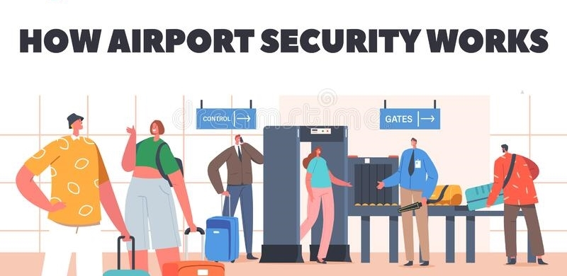
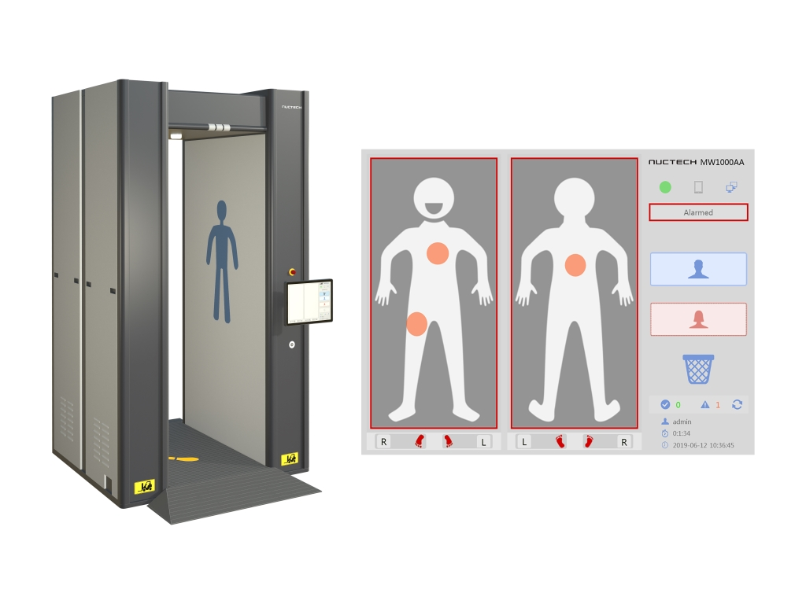
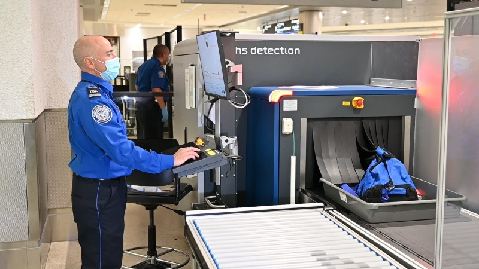
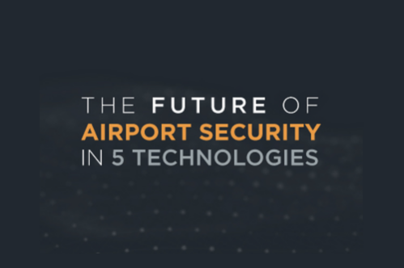

INFORMATION
Let us further discuss about aviation/airline safety & security.
What is aviation/airline safety?
Airport security refers to the techniques and methods used in an attempt to protect passengers, staff, aircraft, and airport property from accidental/malicious harm, crime, terrorism, and other threats. Aviation security is a combination of measures and human and material resources in order to safeguard civil aviation against acts of unlawful interference. Unlawful interference could be acts of terrorism, sabotage, threat to life and property, communication of false threat, bombing, etc.


How Airport Security Works?
Terrorism has been a problem for airlines and air travelers since the 1970s, when hijackings and bombings became the method of choice for subversive, militant organizations around the world. Although security at airports has always been tight, the 9/11 attacks woke many people up to a harsh reality -- it wasn't tight enough.
On that day, men armed with simple box cutters took over four passenger jets and used them as flying bombs. What security measures might have stopped them? How has airport security changed since then? According to the Department of Homeland Security, 730 million people travel on passenger jets every year, while more than 700 million pieces of their baggage are screened for explosives and other dangerous items. In this article, we'll find out how high-tech solutions are being used to make flying as safe as possible -- and we'll also consider if what we are doing is enough.
To read more click on the Visit website button...
Security Equipments on airport for security
Equipment list
Our lists cover approved equipment for:
People Screening: security scanners (SSc), shoe explosive detection (SED), shoe metal detection (SMD) and explosive trace detection equipment (ETD)
Hold Baggage Screening (HBS): explosive detection systems (EDS) and ETD
Cabin Baggage Screening: explosive detection systems for cabin baggage (EDSCB), liquid explosive detection systems (LEDS) and ETD
Cargo Screening: ETD, cargo and mail metal detection (CMMD), EDS, remote explosive scent tracing (REST) and free running explosive detection dogs (FREDD)
Consumables: approved consumables for ETD
Threat Image Projection (TIP) libraries: the library of images controlled and defined by the department
To read more about airport security equipments click on below button and get redirected to another dedicated and informative website.


Process related to Airport security.
Security Screening
TSA incorporates unpredictable security measures, both seen and unseen, to accomplish our transportation security mission. Security measures begin long before you arrive at the airport. TSA works closely with the intelligence and law enforcement communities to share information. Additional security measures are in place from the time you get to the airport until you get to your destination. TSA adjusts processes and procedures to meet the evolving threat and to achieve the highest levels of transportation security. Because of this, you may notice changes in our procedures from time to time. TSA counts on the traveling public to report unattended bags or packages; individuals in possession of a threatening item; and persons trying to enter a restricted area or similar suspicious activities at airports, train stations, bus stops and ports. If You See Something, Say Something™. Report suspicious activity to local law enforcement. Passenger screening at the airport is part of TSA’s layered approach to security to get you safely to your destination. TSA’s screening procedures are intended to prevent prohibited items and other threats to transportation security from entering the sterile area of the airport and are developed in response to information on threats to transportation security.
Click the button below to know more.Why Airport Security Is So Important!
Airport security has evolved with time. Before 1960’s, airport security wasn’t a big issue and was not that strict. But a series of high jacking and terrorist attacks that took place eventually changed the entire airline security industry. These incidents led to the creation of the modern airport security system. We have often seen how people get angry and agitated during security checks. But it is a necessary measure which must be taken to avoid incidents that can cause you harm.

Future of Airport Security
For most passengers, navigating through an airport is not a pleasure, but a chore to be endured. Passing through security checks and immigration desks, being scanned and ID checked, these are elements of the airport experience that the majority of air travellers dread. However, they are an entirely necessary process for keeping the airport, flights and everyone in between safe and secure. As the threats facing airports increase in severity and range, so are the means to counter them effectively. As the following technological advancements and improved strategic protocols demonstrate, airports are getting smarter when it comes to security. This doesn’t apply purely to stopping criminals either, the airports’ goal is to improve security while also alleviating the ‘hassle factor’ for their millions of customers who pass through their gates every day.
Click the button below to know more.